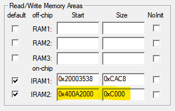
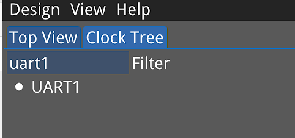

Highlights
- ING916: USB 下载器
- 新增《开发者手册：低功耗》
- mini 软件包
- ING916XX 省电模式仍在持续开发、改进中，QUERY_DEEP_SLEEP_ALLOWED 回调返回 PLATFORM_ALLOW_BLE_ONLY_SLEEP 时可能导致死机； DEEPER SLEEP 模式下底电流可能出现异常，因此 QUERY_DEEP_SLEEP_ALLOWED 回调目前忽略 PLATFORM_ALLOW_DEEPER_SLEEP。
- v8.3.3: gap_start_ccm 函数签名与旧版本不兼容。
- v8.3.6: ING916 ADC 驱动的部分接口与旧版本不兼容。
1. 软件包
-
[更新] ING916：优化低功耗时的电流表现 (8.3.0)
-
[新增] 回调函数表相关 API (8.3.0)
现有的 Platform 回调（事件及中断）注册使用了数组，占用一定的内存。考虑到内存资源宝贵，新增了两个 API，
platform_set_evt_callback_table和platform_set_irq_callback_table，可以一次性为所有事件、中断注册回调函数， 而且整个函数表可存储于 Flash。下面的代码定义了回调函数表，并通过
platform_set_evt_callback_table注册。const platform_evt_cb_table_t evt_cb_table = { .callbacks = { [PLATFORM_CB_EVT_HARD_FAULT] = { .f = (f_platform_evt_cb)cb_hard_fault }, [PLATFORM_CB_EVT_ASSERTION] = { .f = (f_platform_evt_cb)cb_assertion }, [PLATFORM_CB_EVT_HEAP_OOM] = { .f = (f_platform_evt_cb)cb_heap_out_of_mem }, // ... } }; platform_set_evt_callback_table(&evt_cb_table);对于同一种回调类型（事件或者中断），不可混用两种注册方式。例如，对于事件回调，程序里不能既使用
platform_set_evt_callback_table又使用platform_set_evt_callback。对于 CPU 而言，从深睡眠唤醒后中断恢复为屏蔽状态，新添了用于使能中断的
platform_enable_irq。强烈建议: 采用如上所示的指定序号的数组初始化（ISO C99: Designated Initializers）写法。 -
[新增] Extension/Experiment 软件包添加更多的 BLE 私有扩展功能 (8.3.0)
-
锁频。使用
ll_lock_frequency锁频后，所有的蓝牙活动都被固定在指定的信道。使用ll_unlock_frequency可解锁。 -
广播间隔不再要求必须 >= 20ms。
gap_set_ext_adv_para里的interval参数允许填 1。 -
仅限 ING916：允许传统广播数据长度超过规范定义的 31 字节
-
仅限 ING916：自定义数据白化初值、广播数据包 PDU 类型、CTE 比特
-
仅限 ING916：对传统广播进行 CTE IQ 采样
-
-
[修正] ING916：持久化寄存器 API (8.3.0)
ING916 上的
platform_write_persistent_reg、platform_read_persistent_reg功能现已正常。 -
[新增] mini 软件包 (8.3.0)
对于简单的应用而言，内存需求很小，为此，SDK 提供了 mini 软件包。这种软件里的 BLE 协议栈只占用 8KiB SHARE 内存，SYS 内存小于 16KiB。协议栈的功能受限，只支持一组广播集，一个连接。
App 通过
SYSCTRL_SelectMemoryBlocks可关闭未使用的内存块，节省功耗。 比如 SYS 内存总占用小于 16KiB 时就在app_main里加一行代码：SYSCTRL_SelectMemoryBlocks(SYSCTRL_RESERVED_MEM_BLOCKS);（不推荐）对于 8KiB 以外的共享内存，也可以作为普通内存，自由使用。 开发者需要手工将对应的内存范围（下表）添加到开发工具中。
芯片 起始地址 大小（KiB） ING918 0x400A2000 56 ING916 0x40122000 24 以 Keil 和 ING918 为例，这段共享内存的设置如图：

Peripheral Console 已切换到 mini 软件包。
-
[修正] Controller 里对 LL_CONNECTION_PARAM_RSP 的处理 (8.3.0)
当
referenceEventCount字段小于或等于当前的 EventCount 且差别不大时，逻辑有误，导致断连接。现已修正。 -
[修正] 启用 Enhanced Ticks 时的稳定性问题 (8.3.0)
对于内置 FreeRTOS 的软件包，当启用 Enhanced Ticks 后，IDLE 进程有可能死循环。现已修正。
-
[更新] API：platform_install_task_stack (8.3.0)
现在
platform_install_task_stack支持为 Timer 任务重新配置栈空间。旧版本仅支持 Controller/Host 等两个任务。 -
[更新] 几个 ATT API 的签名 (8.3.0)
att_server_notify和att_server_indicate的数据参数现在使用const修饰。 -
[修正] 8.3.0 引入的低功耗下 BLE 加密无法完成的问题 (8.3.2)
-
[新增] 3 个 LL API (8.3.3)
ll_aes_encrypt用于以阻塞方式快速执行 AES 加密（所有软件包）ll_get_conn_info,ll_get_conn_events_info：用于获取连接事件的相关信息（目前仅存在于 exp 软件包）
-
[更新]
gap_start_ccm(8.3.3)与
gap_aes_encrypt类似，新的gap_start_ccm增加了两个参数用于指定计算完成时的回调：gap_hci_cmd_complete_cb_t cb, // 计算完成后的回调 void *user_data // 回调的用户数据 -
[更新] 32k 时钟的配置流程 (8.3.4)
现在 ING916/ING918 使用完全相同的 32k 配置、切换流程，不再需要延迟等待等操作。
-
[新增] 补充 IAR 所需要的头文件 (8.3.5)
-
[修正] ING916: slave latency 不起作用 (8.3.5)
-
[修正] 与某些反应迅速的 Controller 的兼容性 (8.3.5)
-
[更新] 忽略参数有误的 CONNECT_IND (8.3.5)
-
[修正] 内存不足时尝试建立新连接会导致 HardFault (8.3.5)
-
[更新] ING916: mini 及 noos_mini 软件包将部分函数移至 RAM 以降低功耗 (8.3.5)
-
[更新] ING916: QUERY_DEEP_SLEEP_ALLOWED 支持返回 PLATFORM_ALLOW_BLE_ONLY_SLEEP (8.3.5)
-
[更新] ING916:
platform_auto_tune()现在总是调整到 <= 32768Hz 的状态 (8.3.6)由于 RTC 时钟对于 > 32768Hz 的 32k 时钟支持的频率范围有限，所以
platform_auto_tune()现在总是调整到 <= 32768Hz 且尽量接近 32768Hz 的状态。 -
[更新] ING916:
platform_shutdown()默认使用 DEEP sleep 实现 (8.3.6) -
[修正] 某些情况下
ll_get_conn_events_info输出的连接事件信息有误 (Experimental 软件包) (8.3.6) -
[修正] 带确认的 Raw Packet：Responder 的数据无法如预期地得到对端的确认 (Extension 和 Experimental 软件包) (8.3.6)
-
[修正] 启用了 slave latency 后的连接稳定性 (8.3.7)
-
[更新] ING916: typical 软件包现在支持 5 个连接 (8.3.7)
-
[更新] ING916: 改善 mass_conn 软件包在设置了较少的连接数后的吞吐率 (8.3.7)
mass_conn 软件包吞吐率较低。通过
ll_set_max_conn_number设置较小的并发连接数可提高 mass_conn 软件包吞吐率。 -
[更新] 连接事件信息获取接口（目前仅存在于 exp 软件包） (8.3.7)
涉及
ll_get_conn_info,ll_get_conn_events_info。 -
[新增] Channel map 更新事件（目前仅存在于 exp 软件包） (8.3.7)
当连接建立或者 Channel map 更新后，Controller 将上报自定义的元事件。
-
[修正] 作为 Central （主）角色且信号较差或数据量大时，可能导致的原因为 0x28 的连接断开 (8.3.8)
-
[修正] ING916：v8.3.7 改为 5 连接时引起的速率回退 (8.3.8)
-
[修正] ING916：同时使能低功耗和 BOR 导致的 HardFault (8.3.8)
-
[修正] ING916：发送扩展广播时，TxAddr 总是 0 (8.3.9)
-
[更新] ING916：将更多的函数移动到 RAM 以降低功耗（mini 和 noos_mini 软件包） (8.3.9)
-
[修正] Host SM：Just Works 方式下清除配对信息后的重连问题 (8.3.9)
2. 外设驱动
-
[更新] ING916：QDEC/KeyScan/SysCtrl/Comparator/ADC 驱动 (8.3.0)
完善接口。部分新接口可能与由版本不兼容。为 ADC 数据的滤波处理提供参考实现。
-
[更新] ING916：USB (8.3.2)
支持变长数据，修复其它问题。
-
[更新] SYSCTRL (8.3.2)
- 修正 ING918 下唤醒源的读取；
- 为 ING916 PVD、PDR 添加 API。
-
[修正] ING916: SYSCTRL、ADC 里的问题 (8.3.4)
- 修正 ING918 下唤醒源的读取；
- 为 ING916 PVD、PDR 添加 API。
-
[修正] ING916: ADC 时钟 (8.3.5)
-
[更新] ING916: ADC 支持更多的工厂数据格式 (8.3.5)
-
[新增]
SYSCTRL_Init函数 (8.3.5) -
[更新] ING916: SPI 增加关于 格式/Dummy/XiP 的接口 (8.3.5)
-
[修正] ING916: 关于 B 型 GPIO 范围的说明有误 (8.3.6)
-
[更新] ING916: RTC 增加调整 API (8.3.6)
-
[更新] ING916: ADC 更新 Gain 相关接口 (8.3.6)
-
[更新] ING918：SYSCTRL 增加配置接口： 输出 RF 控制信号 (8.3.8)
-
[修正] ING916：工厂数据格式定义 (8.3.8)
-
[更新] ING918：SPI 增加新的工作模式
NONE_DATA(8.3.8) -
[修正] ING916：
write_flash()发生错误时的行为 (8.3.9)
3. 库函数
-
[更新] ING918：Power control 库现在提供 3 种策略供选择 (8.3.0)
-
[新增] USB MSC 模块 (8.3.4)
方便为 app 添加 U 盘功能。
-
[修正] Mesh 库: 堆溢出等问题 (8.3.6)
改进 Mesh 库的消息缓存，避免堆溢出导致的 HardFault；修复
cfg_srv结构体无法保存到 Flash 的问题。Mesh 库内部版本号变为 v1.1.2。
4. 文档
-
[新增] 《开发者手册：低功耗》 (8.3.0)
-
[更新] 《低功耗蓝牙开发者手册》 (8.3.3)
5. 示例
-
[修正] 若干示例中 ING916 的 Flash 存储地址 (8.3.2)
-
[修正] Peripheral Console (Real-time) 的堆空间设置 (8.3.2)
-
[更新] HID Mouse：演示 DIR_ADV (8.3.4)
-
[更新] Peripheral Console (FreeRTOS): 补充 IAR 所需要的头文件 (8.3.5)
-
[更新] Voice Remote Control: 增加 SBC 编码器 (8.3.5)
-
[更新] 配合外设驱动、Mesh 库等相应更新了几个示例 (8.3.6)
-
[更新] Peripheral Console (Real-time): 改为使用 noos_mini 软件包 (8.3.9)
6. 工具
-
[修正] Wizard: FOTA/Cube 相关代码的生成 (8.3.0)
-
[更新] Cube (8.3.0)
ING916 时钟树视图比较复杂，查找外设需要来回拖动界面。现在增加了查找功能，可以方便地定位外设，将其显示于屏幕中央：

-
[更新] tracer (8.3.0)
tracer 现已支持 ING916，可通过主菜单选择。注意：需要先选择 Chip Family，然后打开 log 文件。
-
[新增] ING916: USB downloader (8.3.0)
对于 ING916 芯片，可通过 USB 接口下载程序，相比串口，下载速度更快。提供 3 种下载工具：
- ing_usb.exe：单独的命令行版本的下载工具
- Downloader：在原有的 GUI 版本里将端口配置为“USB”即可
- icsdw.py：Python 版本的下载工具，适合量产
-
[修正] Cube 关于 UART、WATCHDOG 等的问题 (8.3.2)
-
[修正] Cube 918 SPI0 时钟、UART RX 代码生成相关问题 (8.3.3)
-
[更新] ING916：Flash 烧写算法现已支持 IAR/SEGGER/Crossworks (8.3.4)
-
[修正] Cube 关于 WATCHDOG/ING91682C/GPIO唤醒 等的问题 (8.3.4)
-
[修正] Cube 关于 UART 等的问题 (8.3.5)
-
[更新] Wizard 生成使用事件回调表的代码 (8.3.5)
-
[修正] Cube 关于 GPIO 的问题 (8.3.6)
-
[更新] Cube：生成 RF 控制代码；修正了一些问题 (8.3.8)
-
[更新]
gen_files：为 ING916 生成platform_lock.hex文件 (8.3.8) -
[修正] Wizard Check and Fix 时，某些地址没有更新 (8.3.9)